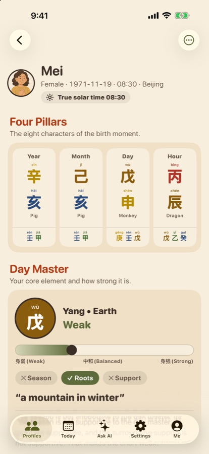
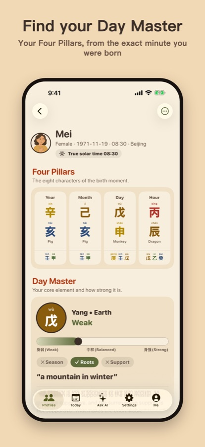
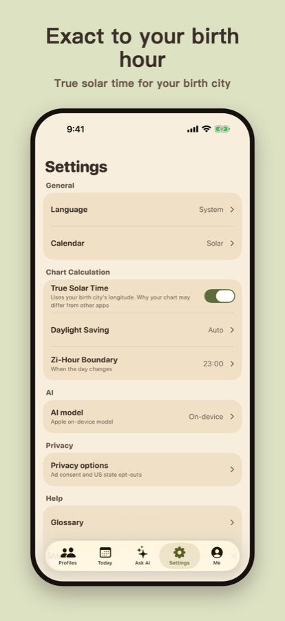
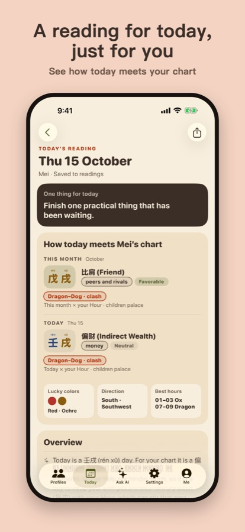
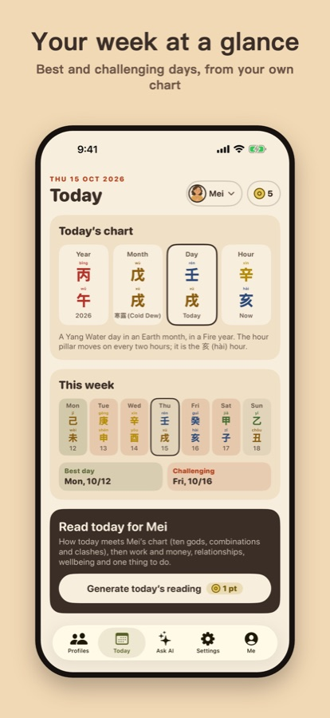
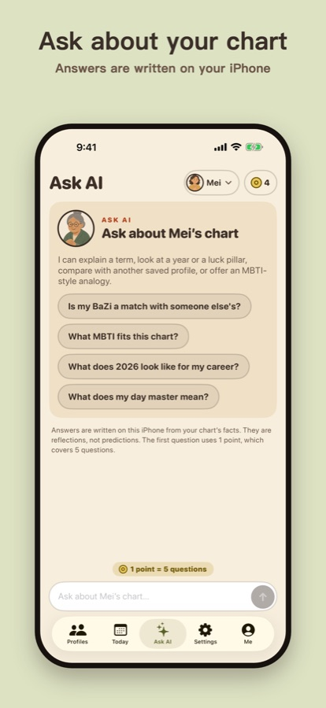
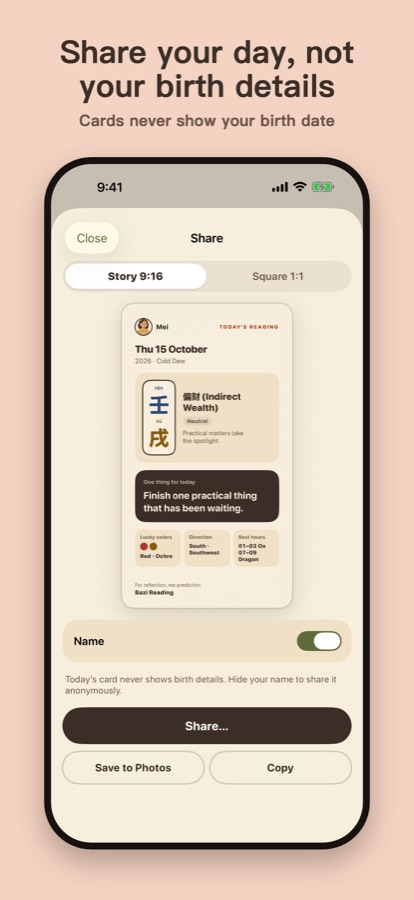

Your sun sign is your birth month. BaZi reads your birth hour.
Find your Day Master in 30 seconds. A private reading from the exact minute you were born, on your iPhone. English and 中文.
Requires iOS 26. AI-written text needs an iPhone with Apple Intelligence.

What is a Day Master?
BaZi (八字, "Four Pillars") turns your birth moment into four pillars. The heart of your chart is your Day Master: one of ten types, like Yang Fire "the Sun" or Yin Water "the Rain".
Exact to your birth hour
We adjust your birth time to true solar time for your birth city.
Private by design
No account. Your birth details and readings stay on your iPhone.
Today and your week
How today meets your chart, with one thing to do, and your best and hardest day.
Ask about your chart
Ask questions and get answers written on your iPhone.
Share cards
Send your day as a card that never shows your birth date.
Honest
A tradition of reflection, not prediction. Not medical, legal or financial advice.
Take a look






Free to use
5 free points every day. A reading costs 1 point; 1 point covers 5 Ask AI questions. Earn more by watching a short ad or keeping a 7-day streak, or buy a 10-point pack that never expires. The app shows ads and asks for your consent first.